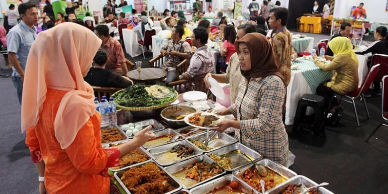
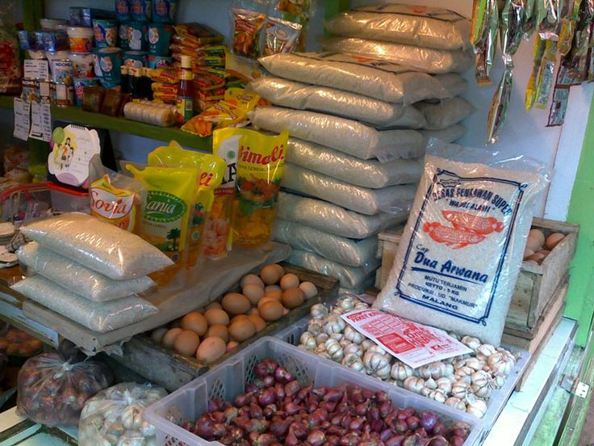
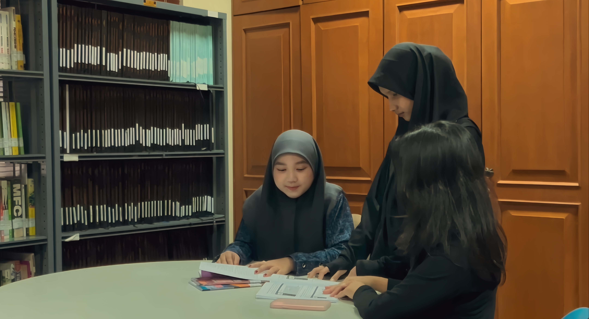
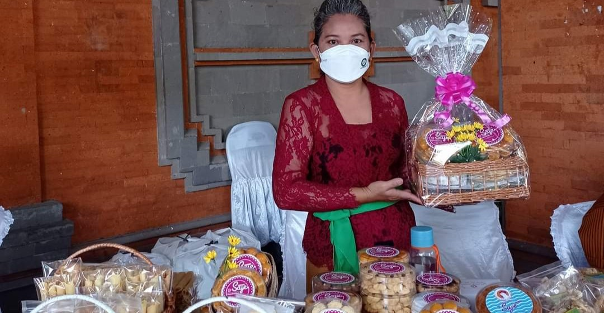

Harga Bahan Pokok Mulai Stabil di Beberapa Daerah

Tren Gaya Hidup Sehat Meningkat di Kalangan Mahasiswa

Pelaku Usaha Kue Rumahan Manfaatkan Media Sosial


Harga Bahan Pokok Mulai Stabil di Beberapa Daerah

Tren Gaya Hidup Sehat Meningkat di Kalangan Mahasiswa

Pelaku Usaha Kue Rumahan Manfaatkan Media Sosial
Usaha mikro, kecil, dan menengah (UMKM) di bidang kuliner terus mengalami perkembangan pesat di tahun 2026. Banyak pelaku usaha memanfaatkan platform digital untuk memperluas jangkauan pasar mereka.
Selain itu, tren makanan rumahan dengan tampilan menarik juga menjadi daya tarik tersendiri bagi konsumen, terutama generasi muda.
Dukungan dari pemerintah serta kemudahan akses teknologi menjadi faktor utama meningkatnya jumlah UMKM baru.